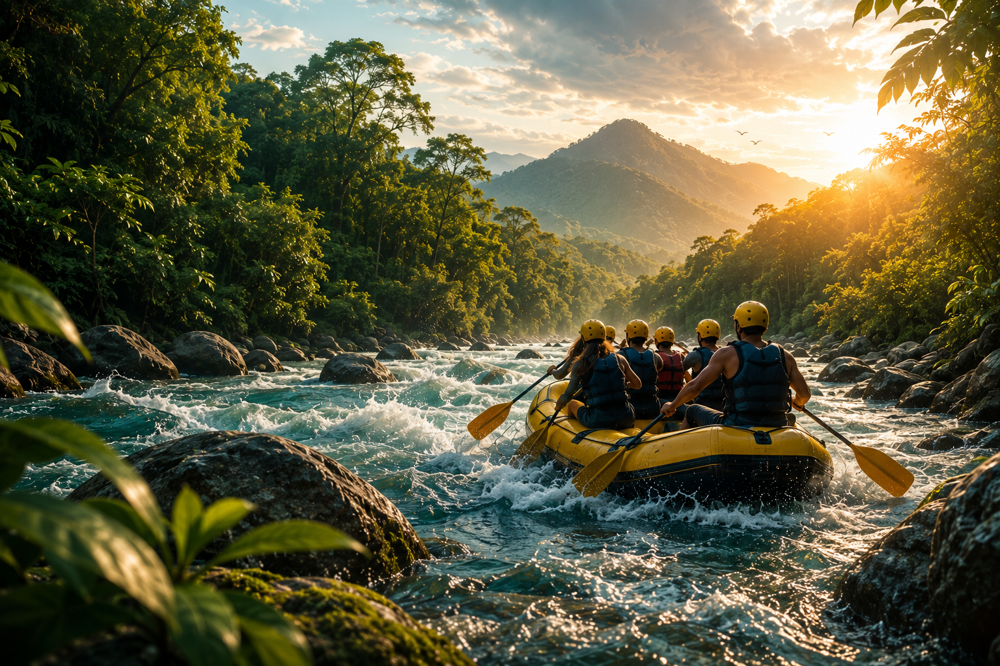
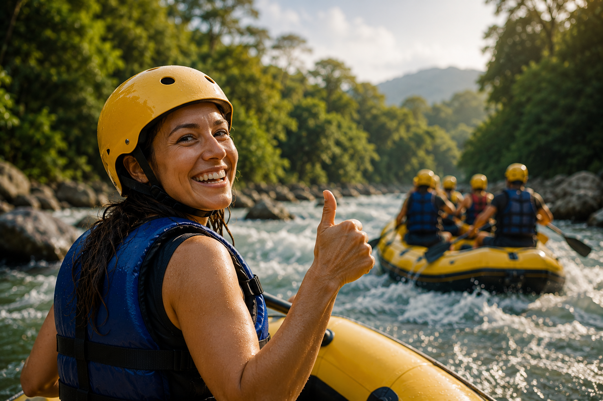

Natural Living

Nosso Objetivo é proporcionar experiências inesquecíveis de rafting e
ecoturismo,
conectando
pessoas à natureza por
meio de aventuras seguras, emocionantes e sustentáveis, promovendo
bem-estar,
lazer e respeito ao
meio ambiente.
Oferecer experiências de rafting e turismo de aventura com excelência,
segurança
e responsabilidade
ambiental, proporcionando momentos de superação, diversão e conexão entre
pessoas e natureza.
Ser referência nacional em turismo de aventura e rafting sustentável,
reconhecida pela qualidade dos
serviços, inovação, compromisso com a preservação ambiental e satisfação dos
clientes.
História
A Rafiting Natural Living nasceu da paixão pela natureza, pela aventura e
pelo desejo de
proporcionar experiências que transformam vidas. Acreditamos que um rio é
muito mais do que um
percurso de águas: é um caminho para descobrir coragem, fortalecer amizades
e criar memórias
inesquecíveis.
Fundada com o propósito de unir turismo de aventura, segurança e preservação
ambiental, a empresa
reúne uma equipe apaixonada pelo rafting e comprometida em oferecer
experiências autênticas para
pessoas de todas as idades e níveis de experiência.
Cada expedição é planejada com responsabilidade, utilizando equipamentos de
alta qualidade e guias
capacitados, garantindo que nossos visitantes aproveitem cada momento com
tranquilidade e emoção.
Além da aventura, incentivamos o respeito aos rios, às florestas e às
comunidades locais, promovendo
práticas sustentáveis em todas as nossas atividades.
Ao longo de nossa trajetória, temos recebido famílias, grupos de amigos,
empresas e aventureiros que
buscam muito mais do que um passeio: procuram conexão com a natureza,
superação de desafios e
momentos únicos para compartilhar.
Na Rafiting Natural Living, acreditamos que cada descida de rio representa
uma nova história. Nosso
compromisso é continuar criando experiências marcantes, sempre com
segurança, respeito ao meio
ambiente e a certeza de que as melhores aventuras acontecem quando estamos
em harmonia com a
natureza.